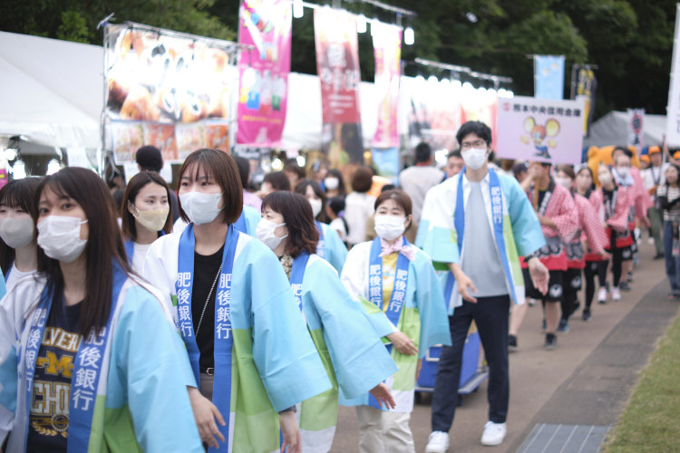
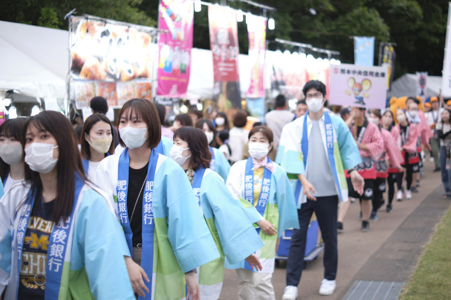
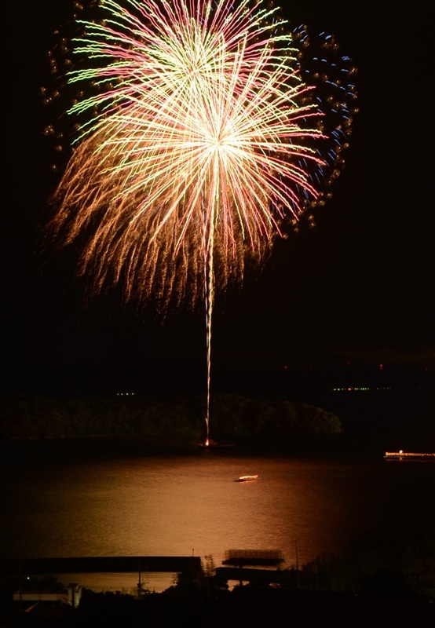
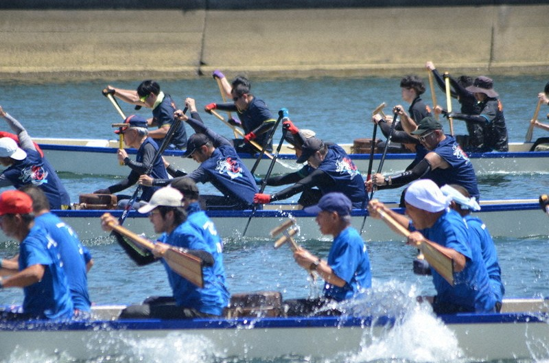
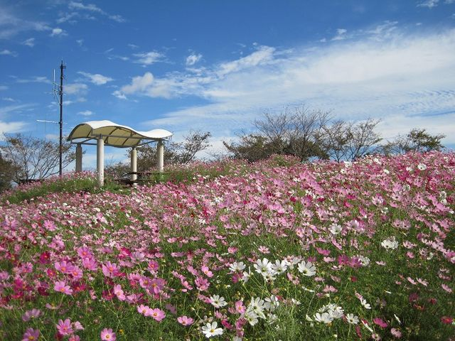

恋龍祭は、もともと水俣湾をお祝いする「みなまた港まつり」から始め、 その祭りと同時に、水俣市内まで「カーニバル」と「総踊り」のイベントも開催しました それから、毎回開催されるようになり、水俣で一番大きなイベントになっています。 総踊りと屋台のほかに、艦船イベントや、よさこい祭り、和太鼓などの演奏もあります。 名前は、水俣湾にある恋路島と市街地を見下ろす龍山から付けられています。
恋龍祭は、もともと水俣湾をお祝いする「みなまた港まつり」から始め、 その祭りと同時に、水俣市内まで「カーニバル」と「総踊り」のイベントも開催しました それから、毎回開催されるようになり、水俣で一番大きなイベントになっています。 総踊りと屋台のほかに、艦船イベントや、よさこい祭り、和太鼓などの演奏もあります。 名前は、水俣湾にある恋路島と市街地を見下ろす龍山から付けられています。
みなまた花火大会は、恋龍祭と同時に開催される花火大会です。 約45分で、とても素敵な光景です。 湯の児水浴場か、水俣湾、エコパーク水俣に開催されます。
毎年７月に行われる競り舟大会です。九州では大人気なスポーツです。 水俣市民だけでなく、熊本県も、九州の各地域から参加するチームもあります。 暑い暑い夏の真ん中で、水俣川で汗をかいて楽しめます。でも熱中症に注意しないといけません。
１０月に開催され、中尾山公園ではコスモスが咲きながら屋台や演奏、写真コンクールも楽しめます。 中尾山公園に展望台もあり、水俣市から天草まで見えます。
